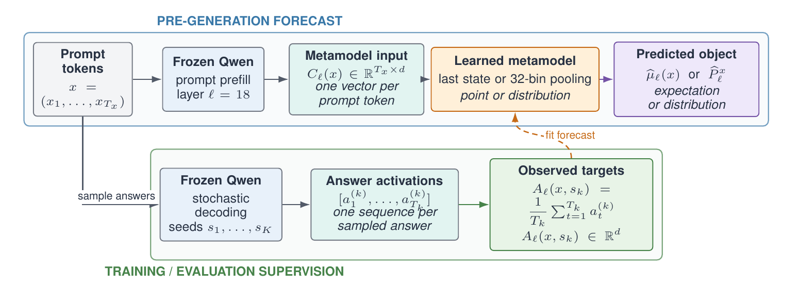

NeurIPS 2026 · NeuralArtifacts Workshop · Oral Spotlight
Context–Answer Metamodels: Forecasting LLM Activations Before the First Answer Token
- We forecast answer activation means and variability before generation.
- Forecasts retain behavioral signal, improve with data, and transfer across tasks and models in our experiments.